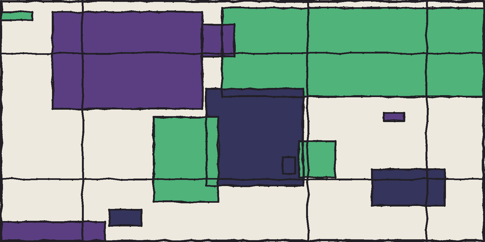

I'm a geophysicist working on how the Earth's plates, oceans and continents have moved and deformed through deep time, and using gravity, magnetic and marine geophysical data to understand what's happening beneath the seafloor today. I also build open scientific software and run outreach projects that put research instruments in front of students.

A mix of research infrastructure, outreach and (occasionally) games.
Project lead. Building and piloting low-cost magnetometers for secondary school classrooms so students can monitor Earth's magnetic field and the Aurora Australis, and connect that data to real geoscience. Funded via AuScope (NCRIS) in partnership with IMAS.
GitHub org → AuScope project page →An ARC Future Fellowship using new satellite observations to work out where Earth's crustal magnetic field actually comes from, and to build better models of the magnetisation of the crust and uppermost mantle, with possible applications from mineral exploration to heat flow beneath the Antarctic ice sheet.
A Marine National Facility research voyage to sample submarine plateaus off northwest Australia, remnants of the continent's earliest breakup from Gondwana, in a part of the seafloor that is still poorly sampled and whose origins remain disputed.
A small collection of free, browser-based games about seafloor mapping, magnetometers and rock hunting, built as a side project to make ocean and Earth science a bit more playful.
Play the games →My work spans plate tectonics, marine geophysics and geodynamics: reconstructing the past to help explain the geology, oceans and climate of the present.
Building internally consistent, deep-time reconstructions of continents, ocean basins and plate boundaries, and developing the open-source GPlates software used by other Earth scientists.
Learn more →Testing and building the reference frame that pins plate motions to the Earth's deep interior, from trench kinematics and seafloor spreading fabric to fully automated optimization back to 1 billion years ago.
Learn more →Reconstructing the breakup of Australia, Antarctica and their neighbouring microcontinents and ocean basins from Gondwana, using magnetic anomalies, fracture zones, dredge samples and onshore geology.
Learn more →Collecting and analysing gravity, magnetic and bathymetric data at sea aboard national research vessels to map the structure of the seafloor and the crust beneath it.
Learn more →Imaging subduction zones, oceanic lithosphere and the crust of Mars from orbit, using satellite magnetic field data from CHAMP, Swarm and MSS-1.
Learn more →Combining big geochemical and geochronological databases with plate tectonic reconstructions to test what the geological record can and can't tell us about deep time.
Learn more →Linking plate tectonics to the rest of the Earth system (ocean gateways, mountain building and volcanic arcs) and their long-term influence on climate.
Learn more →Connecting plate motions to mantle convection, hotspot volcanism and the deep Earth, and their long-term influence on the surface.
Learn more →I try to release the code behind my research rather than leaving it in a paper's supplementary material. Most of it lives on GitHub: reconstruction infrastructure, notebooks that reproduce published figures, and a few experiments.
A Python class wrapping GPlates plate reconstructions, so reconstructions can be scripted and composed programmatically instead of driven only through the GPlates GUI.
Repository →Models the magnetization of Earth's lithosphere using vector spherical harmonics, built to interpret satellite magnetic field observations of the oceanic crust.
Repository →Code and figures behind a Nature Reviews Earth & Environment paper examining how plate reconstructions are actually built, and what that means for interpreting them.
Repository →Automated workflow that turns topological plate reconstructions into seafloor age grids, including for ocean basins that no longer exist.
Repository →Generates synthetic abyssal hill seafloor fabric from spreading rate and crustal age. Also an experiment in using Claude Code to write research software.
Repository →Reconstructs ancient elevation along the Andes from igneous geochemistry, implementing three published paleoelevation calibration methods.
Repository →Notebooks reproducing an analysis of where and when subduction zones have been born and died through Earth history, comparing two independent reconstruction models.
Repository →I occasionally write for a general audience on The Conversation, explaining ideas about plate tectonics, lost continents and the deep Earth without the jargon.
Read the articles →I hold a PhD in geophysics from the University of Leeds, and spent several years analysing gravity and magnetic data in industry (Getech) before moving into academic research. I was a Research Fellow with the EarthByte Group at the University of Sydney (2010–2019) and a Professor at Northwest University, Xi'an, China (2019–2023), before joining IMAS at the University of Tasmania, where I now hold an ARC Future Fellowship. Alongside research, I go to sea on national research vessels, supervise PhD students and collaborate closely with colleagues across several institutions, and work on public science engagement, including through the AusMIS program.